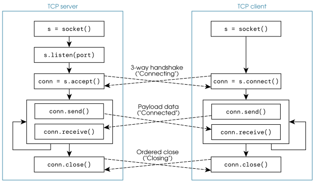
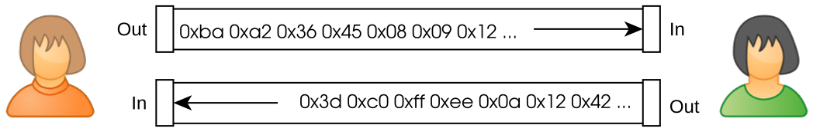
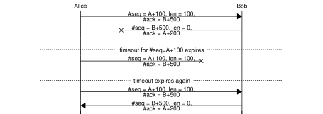
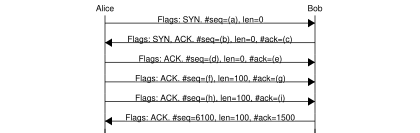
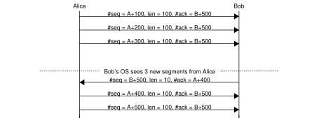
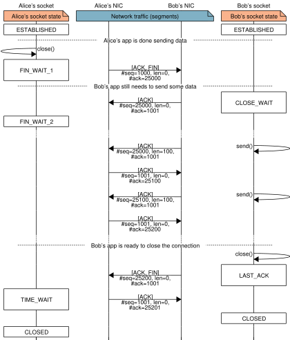

[9] Capa 4: Transporte¶


Capacidades¶
La capa de transporte comunica procesos (programas) que se ejecutan en hosts (equipos conectados a la red) potencialmente distintos. Estos procesos se identifican mediante direcciones de capa 4 llamadas puertos.
La capa de transporte ofrece dos formas distintas de comunicación: sin conexiones (UDP) y con conexiones (TCP).
UDP no establece una conexión con el host de destino porque la prioridad es enviar unos datos de payload (carga útil) lo más rápido posible. En su lugar, UDP envía paquetes llamados datagramas de usuario directamente al destino, sin esperar ningún tipo de confirmación de recepción por parte de la capa UDP del destino. Las cabeceras UDP son simples y pequeñas, de modo que el overhead (sobrecarga) de este protocolo también se mantiene pequeño.
TCP establece una conexión antes de enviar cualquier dato de payload para asegurarse de que ambos extremos están listos. Además, TCP espera un acuse de recibo (confirmación) de la recepción de cada byte de datos de payload. En caso contrario, los datos se retransmiten tras un periodo de espera, lo que le da a TCP su fiabilidad. TCP también usa una forma muy ingeniosa de limitar la velocidad de intercambio de datos (control de flujo) para que ordenadores rápidos y lentos puedan coexistir y comunicarse mediante TCP/IP. Para ofrecer todas estas prestaciones, TCP es un protocolo más complejo que UDP, usa cabeceras más grandes e introduce un mayor overhead.
Ejercicio 9.1
¿Cuáles de las siguientes aplicaciones crees que usan UDP y TCP?
-
Juegos multijugador
-
La WWW
-
BitTorrent
-
Streaming de vídeo
Protocolos¶

La capa de transporte está en lo más alto de la pila que proporciona el sistema operativo. Prácticamente todas las aplicaciones y, por tanto, sus protocolos de comunicación, emplean TCP, UDP (o incluso ambos) para intercambiar datos por la red. En la figura anterior se muestran algunos protocolos importantes que usan TCP o UDP.
Tanto TCP como UDP encapsulan sus PDU en datagramas IP. Generalmente se usa IPv4, pero IPv6 también es una posibilidad cuando está disponible.
Nota
Ni TCP ni UDP cambian en absoluto cuando se usa IPv6 en lugar de IPv4, es decir, no existe un protocolo TCPv6. En su lugar, tcp6 y otras expresiones que incluyen TCP y 6 se refieren a TCP (el de siempre) sobre IPv6.
[9.1] Direccionamiento de capa 4¶
Las “direcciones” de TCP y UDP se llaman puertos y son enteros sin signo de \(16\) bits. Para las personas, los puertos se expresan principalmente de dos formas:
-
Como un número, p.ej. 22, 80 o 443.
-
Como el nombre del servicio que suele usar ese puerto, p.ej. sshd, http, https.
Cuando se recibe una PDU de capa 4, el sistema operativo usa el puerto de su cabecera para saber cuál de los procesos en ejecución debe recibir los datos. A su vez, los procesos tienen que hacer bind (asociarse) a un puerto TCP o a un puerto TCP (o a ambos) para que el sistema operativo sepa de qué puerto esperan datos.
Solo un proceso puede hacer bind a un puerto a la vez para enviar datos, pero los puertos TCP y UDP se tratan de forma independiente:
-
Si un proceso está asociado al puerto
TCP/100, no recibirá tráfico UDP dirigido al puerto 100. -
Si un proceso está asociado al puerto
TCP/100, otro proceso (o incluso el mismo) puede hacer bind aUDP/100.
El puerto número 0 está reservado, así que el rango de puertos utilizable es 1–65535. Los puertos 1–1023 solo se asocian a procesos con privilegios (p.ej. un servidor http), mientras que las aplicaciones cliente (p.ej. un cliente http) solo pueden hacer bind a los puertos 1024–65535 en función de su disponibilidad.
Ejercicio 9.2
¿Cuántos servidores distintos se pueden ejecutar en una máquina para ofrecer alguna funcionalidad a otros hosts de la red?
[9.2] UDP – User Datagram Protocol¶
Formato del paquete¶
Todos los datagramas de usuario que usa UDP tienen una cabecera de \(8\) bytes y la siguiente estructura:
Ejercicio 9.3
-
¿Cuál es el tamaño máximo de payload que se puede enviar en un único datagrama de usuario?
-
¿Es deseable la fragmentación cuando se usa UDP?
Funcionamiento¶

Los clientes UDP crean primero un socket (punto de conexión) y después envían directamente los datagramas de usuario con sendto. No hace falta establecer ni cerrar ninguna conexión.
Los servidores UDP deben hacer primero bind al puerto que se va a exponer a los clientes y después recibir cada datagrama con una llamada individual a la función de lectura (recvfrom).
La función bind es puramente interna al servidor: implica cambios en su configuración (la tabla que relaciona números de puerto y procesos), pero no genera ningún mensaje.
Ejercicio 9.4
-
¿Puede funcionar un servidor UDP sin enviar ningún dato por la red?
-
¿Puede un cliente recibir tráfico UDP sin hacer bind a un puerto?
-
¿Pueden dos hosts distintos hacer bind al mismo puerto y aun así intercambiar datagramas de usuario?
Ejercicio 9.5
El siguiente fragmento de código muestra el esqueleto básico de un servidor UDP:
snippets/udpserver.py
import socket
port = 4567
s = socket.socket(family=socket.AF_INET, type=socket.SOCK_DGRAM)
s.bind(('', port))
while True:
user_datagram = s.recvfrom(1024)
print(f"Received UDP on {port=}: {user_datagram!r}")
-
Ejecuta el servidor y, en otra terminal, ejecuta
ncat -u localhost 4567y escribe algo de texto para probar el servidor. -
Implementa el extremo cliente de la comunicación y pruébalo contra el servidor.
-
¿Qué información importante obtienes si cambias
s.recvfrompors.recvmsg?
Nota
Este código usa sockets UDP normales, así que no necesita permisos de administrador ni la capacidad CAP_NET_RAW, como sí ocurría en el Ejercicio 7.4, que en cambio requería acceso a sockets de capa 2 (p.ej. Ethernet).
[9.3] TCP – Transport Control Protocol¶
Formato del paquete¶
Las PDU de TCP se llaman segmentos. Su cabecera tiene al menos \(20\) bytes, pero puede crecer cuando se usan ciertas opciones:
Las cabeceras TCP contienen ocho flags (indicadores) de \(1\) bit. De ellos, cuatro se usan para funcionalidades centrales de TCP que se tratan en las siguientes secciones. En el orden en que aparecen:
-
ACK: flag de acuse de recibo – “mi número de ack es válido”
-
RST: flag de reinicio – “aborta la conexión”
-
SYN: flag de sincronización – “estoy abriendo mi extremo de la conexión”
-
FIN: flag de finalización – “no enviaré más datos de payload”
Ejercicio 9.6
¿Cómo puede saber el extremo receptor el tamaño de las opciones y de los datos de payload?
Funcionamiento¶
TCP es un protocolo stateful (con estado). Los sockets TCP transitan entre múltiples estados durante la comunicación. Cada extremo de la comunicación tiene su propio socket con su propio estado. A grandes rasgos, las conexiones se pueden clasificar como “Conectando”, “Conexión establecida” o “Cerrando la conexión”. Los datos de payload solo están pensados para intercambiarse durante “Conexión establecida”.

Los sockets TCP pueden estar en uno de \(11\) estados. Estos estados, junto con dos contadores de \(16\) bits (número de confirmación y número de secuencia), hacen posible la fiabilidad en la comunicación que se espera de TCP. El significado de estos estados y sus transiciones se explican en los siguientes capítulos.
[9.4] TCP: “Conectando”¶

Cuando se crea un socket, empieza como CLOSED. El extremo que actúa como servidor empieza a escuchar en el puerto configurado para el servicio y pasa al estado LISTEN. En este estado no se intercambia payload.
Una conexión se establece mediante un 3-way handshake (negociación inicial) usando los flags SYN y ACK de la cabecera. Cada extremo de la comunicación alcanza el estado ESTABLISHED en un momento distinto gracias a este handshake. Cuando lo hacen, están listos para intercambiar datos de payload.
Nota
En TCP, ambos extremos se comunican como peers (pares) iguales; no importa quién inició la comunicación. Dicho esto, normalmente un extremo realiza una “apertura activa” (el cliente) y el otro una “apertura pasiva” (el servidor).
Cada extremo de la comunicación lleva la cuenta de sus contadores de número de confirmación (#ack) y número de secuencia (#seq). Cada extremo elige el valor de #seq por separado (y normalmente al azar): \(A,\,B \in [0, 2^{32} - 1]\).
Una sola vez durante la apertura de la conexión, cada extremo envía exactamente un segmento con el flag SYN activado. Estos segmentos intercambian (sincronizan) sus números de secuencia iniciales \(A\) y \(B\).
Los segmentos con el flag ACK activado (todos salvo el primer segmento del cliente) tienen su #ack fijado a “el siguiente #seq que se espera del otro extremo”. Este #ack debe leerse como “he recibido correctamente todos los segmentos correspondientes a #ack, sin incluirlo”.
Los números #ack y #seq esperados durante el 3-way handshake son:

Ejercicio 9.7
-
¿Cómo puede saber un extremo que el otro ha recibido el #seq que ha elegido?
-
¿Por qué el tercer segmento tiene su #seq fijado a \(A+1\) y no a \(A\)?
-
¿Qué #seq tendrá el siguiente segmento que envíe el servidor?
[9.5] TCP: “Conexión establecida”¶
Flujos y números de secuencia¶
TCP ofrece la ilusión de un flujo de datos: dos tuberías de datos en los sentidos de entrada y salida (una conexión full-duplex). Estas tuberías son fiables, es decir, se establecen mecanismos para evitar la pérdida, la duplicación y el reordenamiento de los datos.

A cada byte de datos de payload se le asigna un número de secuencia (#seq) en la cabecera TCP. El primer byte de datos de payload tiene #seq \(=A+1\), donde \(A\) es el número de secuencia inicial establecido durante la apertura de la conexión (ver Sección 9.4). A cada nuevo byte de datos se le asigna el siguiente #seq (sin huecos).
| #seq | \(A\) | \(A+1\) | \(A+2\) | \(A+3\) | \(A+4\) | \(A+5\) | \(A+6\) | \(A+7\) | \(A+8\) | \(A+9\) | \(\cdots\) |
|---|---|---|---|---|---|---|---|---|---|---|---|
| contenido | SYN | ||||||||||
'H' |
|||||||||||
'i' |
|||||||||||
'!' |
|||||||||||
'\n' |
|||||||||||
'H' |
|||||||||||
'o' |
|||||||||||
'w' |
|||||||||||
' ' |
|||||||||||
'a' |
\(\cdots\) |
Ejercicio 9.8
El #seq que viene después de \(2^{32} - 1\) es \(0\). ¿Por qué?
Los datos de payload en TCP siempre se envían junto con la primera posición que ocupan en el flujo y su longitud. Por ejemplo, a partir de los datos mostrados arriba, se podrían producir dos segmentos:
-
#seq \(= A+1\), len \(= 4\), datos \(=\)
0x48 69 21 0a('Hi!\n') -
#seq \(= A+5\), len \(= 13\), datos \(=\)
0x48 6f 77 20 61 72 65 20 79 6f 75 3f 0a
Ejercicio 9.9
¿Cuál sería el #seq del siguiente segmento con nuevos datos de payload?
El extremo receptor de un segmento TCP usa esta información para recomponer una copia de los datos en el orden correcto, aunque los propios segmentos lleguen desordenados. Estos datos se pasan a la capa superior a través de un buffer (memoria intermedia), o directamente si el flag TCP PSH (push) está activado.

Fiabilidad y retransmisión¶
TCP necesita que todos los datos transmitidos sean confirmados por el otro extremo. Siempre que se reciben datos en un segmento TCP, el extremo receptor devuelve una confirmación aunque en ese momento no necesite enviar ningún dato. El número de confirmación (#ack) de la cabecera TCP se usa para decirle al otro extremo que todos los datos hasta (sin incluirlo) #ack.
Nota
El campo #seq de una cabecera TCP se refiere a los números de secuencia del emisor. El campo #ack se refiere a los números de secuencia del receptor.
En las confirmaciones TCP se incluyen datos de payload siempre que haya datos disponibles. A la inversa, el valor más reciente de #ack se incluye siempre que se envían datos, es decir, las confirmaciones hacen piggyback (viajan a cuestas) sobre los datos de payload.
Por ejemplo, si Alice envía una petición de \(25\) bytes, Bob puede enviar su respuesta de \(10\) bytes y la confirmación de los datos de Alice en el mismo segmento TCP. Alice necesita confirmar los datos de Bob y, si hace falta, envía enseguida un segmento sin datos. Alice retomará el envío de datos más adelante cuando lo necesite.

Un segmento TCP que no se confirma tras un cierto periodo de espera se retransmite. Ese tiempo lo decide el sistema operativo de cada extremo a partir del tiempo medio que tarda en enviarse un segmento y recibirse una respuesta (el tiempo de ida y vuelta, RTT).
Las confirmaciones se envían aunque esa confirmación sea idéntica a otra anterior. Esto es así porque las confirmaciones también se pueden perder.

Ejercicio 9.10
Suponiendo que ambos extremos siguen TCP correctamente:
-
Proporciona un conjunto de valores válidos para (a) a (i).
-
¿Cómo cambia la historia si (f) y (h) son idénticos/distintos?

Límites de transmisión¶
Los datos que hay que transmitir se suelen producir a ráfagas. Nos gustaría enviar todo lo posible lo antes posible, pero TCP impone dos límites.
El primer límite, el tamaño máximo de segmento (MSS), es la cantidad máxima de datos de payload por segmento permitida en una conexión TCP.
La razón de este límite es evitar la fragmentación, por motivos de rendimiento, p.ej. por el elevado coste en tiempo y memoria del reensamblado.
Por defecto, el MSS es de \(536\) bytes en IPv4, pero se puede negociar con las opciones de la cabecera TCP durante la fase de apertura de la conexión. En IPv6, el MSS por defecto es de \(1220\) bytes.
Ejercicio 9.11
Ethernet tiene una MTU de \(1500\) bytes. Suponiendo que los datagramas viajan solo por 2 redes Ethernet:
-
¿Cuál es el mayor MSS que no puede provocar fragmentación, MSS\(_\textrm{max}\)?
-
¿Cuál es el overhead para MSS\(_\textrm{max}\) y para MSS\(_\textrm{max}\) + 1?
El segundo límite afecta a la cantidad máxima de datos de payload que se pueden enviar antes de que el otro extremo responda con un nuevo #ack: el llamado tamaño de la ventana de transmisión. Un host no enviará datos (por muchos que haya disponibles o por urgentes que sean) hasta que lleguen esos #ack. Cuando el ordenador más lento responde, lo hace siempre con el #ack más reciente.
Ejercicio 9.12
¿Cuáles son los tamaños de MSS y de ventana de transmisión más probables en este ejemplo?

El valor de la ventana de transmisión se anuncia en todos y cada uno de los segmentos TCP: este valor es un campo obligatorio de las cabeceras TCP. A medida que avanza la conexión, cada host puede cambiar el valor que anuncia en función de su propia carga y necesidades.
Nota
Cada host anuncia su propio tamaño de ventana.
Este límite sirve para evitar que los ordenadores rápidos desborden a los más lentos (o sobrecargados): sin el límite, el ordenador más lento podría necesitar un buffer de tamaño infinitamente creciente para almacenar los segmentos aún no procesados que le envía el ordenador más rápido. Con este límite, en el punto de saturación ambos extremos envían segmentos al mismo ritmo, aunque tarden tiempos muy distintos en producirlos y procesarlos.
[9.6] TCP: “Cerrando la conexión”¶
FIN, #seq y #ack¶
Una vez la conexión está ESTABLISHED, sigue así hasta que uno de los dos extremos decide cerrarla.
Un nodo anuncia que ha terminado de enviar datos y que quiere cerrar la conexión enviando un segmento con el flag FIN activo en la cabecera. El otro extremo puede seguir enviando datos, en cuyo caso espera respuestas con valores de #ack actualizados. El otro extremo también puede optar por cerrar la conexión en cuanto ve el primer FIN. En cualquier caso, si se envían \(k\) bytes de datos y \(A\) es el #seq inicial, entonces se espera un segmento con #ack \(= A+k+2\).
| #seq | \(A\) | \(A+1\) | \(\cdots\) | \(A+k\) | \(A+k+1\) |
|---|---|---|---|---|---|
| contenido | SYN | Datos \(\cdots\) | \(\cdots\) | \(\cdots\) datos | FIN |
Fíjate en que el flag FIN ocupa por sí mismo un número de secuencia y debe confirmarse igual que el SYN (ver Sección 9.4), p.ej.:
Cierre bilateral¶
Después de que un extremo cierre su lado de la conexión, el otro puede seguir enviando datos indefinidamente. Cuando el segundo lado termina de enviar datos, también envía un segmento con el flag FIN activado.

Fíjate en que, si el otro extremo quiere terminar la conexión en cuanto recibe un segmento FIN, el proceso de cierre se condensa en \(3\) segmentos en lugar de \(4\), p.ej.

Nota
Fíjate en que:
-
Cada extremo envía solo un segmento con el flag FIN, salvo en caso de retransmisión.
-
El segmento con el flag FIN puede contener datos de payload. En ese caso:
-
Los datos de payload ocupan números de secuencia anteriores al del FIN.
-
El otro extremo debe confirmar (ACK) tanto los datos de payload como el FIN.
-
Cierre unilateral¶
A veces hay que terminar una conexión y no hay tiempo ni interés suficientes para pasar por el proceso de cierre bilateral de varios pasos. Puede ser el caso, p.ej. cuando un proceso se cuelga, un puerto TCP o UDP dado está bloqueado y en otras situaciones de error.
En este escenario, el host que ha detectado la situación anómala simplemente envía un segmento con su flag RST (reset) activado. Los extremos receptores no deben confirmar el RST; en su lugar, se liberan directamente los recursos de la conexión, p.ej.

Seguir el procedimiento de cierre de conexión bilateral o unilateral ayuda a reducir los recursos de cómputo necesarios para mantener las pilas de red de miles de millones de dispositivos de todo el mundo.
Nota
Una conexión no se puede volver a abrir después de cerrarse. Al flag RST se le podría haber llamado, con más precisión, “terminación forzosa”.
Ejercicio 9.13
El siguiente diagrama muestra los \(11\) estados de TCP y (casi) todas las transiciones de estado posibles.

-
Indica el ciclo de vida del socket de un servidor HTTP como un camino en el grafo.
-
Indica el ciclo de vida del socket del cliente HTTP correspondiente como un camino en el grafo.
-
El estado
CLOSINGno se describe en las secciones anteriores. ¿Cuál crees que es su propósito?
Nota
Este diagrama está adaptado de “TCP/IP Illustrated, Volume 2: The Implementation,” de Gary R. Wright y W. Richard Stevens.